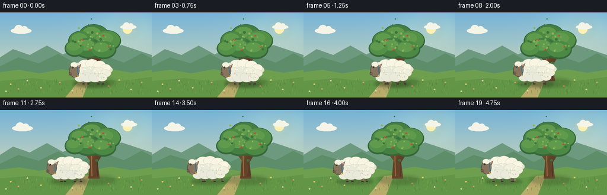
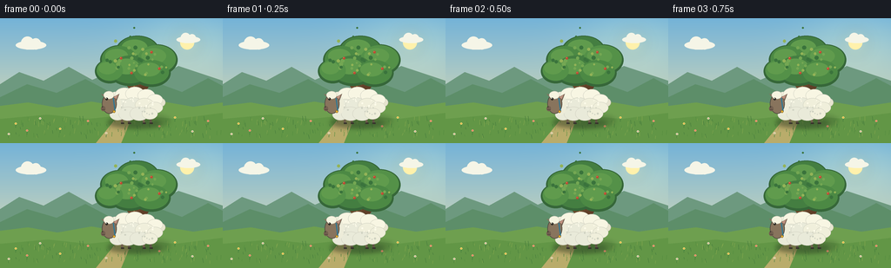

CODING AGENTS AS PIXEL WORLD MODELS
traex/GPT-5.6-Sol · instance_preservation_0056
点击播放 · 原生 RGB 像素
逐轮保存的候选
回放视频、检查图与代码变化。
每份候选均可单独播放。实际图片检查记录在下方工具轨迹中。
候选 01播放与检查图
点击播放 · 原生 RGB 像素

展开代码变化
--- 上一保存版本
+++ 本次保存版本
@@ -0,0 +1,202 @@
+from pathlib import Path
+import math
+import numpy as np
+from PIL import Image, ImageDraw, ImageFilter
+import artifact_io
+
+# Procedural, antialiased animation generated entirely from text.
+W, H, N = 256, 144, 20
+S = 4
+rng = np.random.default_rng(560056)
+
+# Stable environmental detail positions.
+stars = []
+clouds = [(35, 29, 1.0), (216, 23, .78)]
+grass_blades = [(float(rng.uniform(0, W)), float(rng.uniform(117, 139)),
+ float(rng.uniform(2, 6)), int(rng.integers(0, 3))) for _ in range(130)]
+flowers = [(float(x), float(y), c) for x, y, c in [
+ (18,126,0),(31,134,1),(46,120,2),(69,132,0),(101,123,1),(122,137,2),
+ (183,129,1),(201,119,0),(221,135,2),(239,123,1),(10,138,2)]]
+# Fixed speckles and branch fruit/highlights preserve tree identity.
+leaf_dots = [(float(rng.normal(0, 19)), float(rng.normal(0, 12)), float(rng.uniform(1.0,2.4)),
+ int(rng.integers(0,3))) for _ in range(35)]
+wool_puffs = [(-22,-7,10),(-12,-11,11),(0,-12,11),(13,-10,10),(23,-5,9),
+ (-25,3,10),(-14,2,11),(-2,1,12),(11,1,11),(23,4,9),
+ (-20,12,9),(-8,11,11),(5,11,11),(17,11,9)]
+wool_specks = [(float(rng.uniform(-22, 23)), float(rng.uniform(-10, 12)),
+ float(rng.uniform(.45, 1.1))) for _ in range(27)]
+
+def sc(v): return int(round(v*S))
+def box(b): return tuple(sc(v) for v in b)
+def pts(p): return [(sc(x), sc(y)) for x,y in p]
+
+def ellipse(draw, b, fill, outline=None, width=1):
+ draw.ellipse(box(b), fill=fill, outline=outline, width=max(1, sc(width)))
+def polygon(draw, p, fill): draw.polygon(pts(p), fill=fill)
+def line(draw, p, fill, width=1, joint='curve'):
+ draw.line(pts(p), fill=fill, width=max(1,sc(width)), joint=joint)
+
+def background(frame):
+ # Golden late-afternoon sky, drawn directly at supersampled resolution.
+ hh, ww = H*S, W*S
+ y = np.arange(hh)[:,None] / (hh-1)
+ top = np.array([112,178,218.],dtype=float)
+ bottom = np.array([238,226,172.],dtype=float)
+ rgb = top[None,None,:]*(1-y[:,:,None]) + bottom[None,None,:]*y[:,:,None]
+ rgb = np.repeat(rgb, ww, axis=1)
+ # Gentle sun glow near upper right.
+ yy, xx = np.mgrid[0:hh,0:ww]
+ d2 = ((xx/S-213)/60)**2 + ((yy/S-30)/38)**2
+ glow = np.exp(-d2)[...,None] * np.array([25,18,3])[None,None,:]
+ rgb = np.clip(rgb+glow,0,255).astype(np.uint8)
+ im = Image.fromarray(rgb,'RGB')
+ d = ImageDraw.Draw(im)
+ # Sun with soft aura.
+ aura = Image.new('RGBA', im.size, (0,0,0,0)); ad=ImageDraw.Draw(aura)
+ ellipse(ad,(199,12,231,44),(255,237,151,25)); aura=aura.filter(ImageFilter.GaussianBlur(sc(7)))
+ im=Image.alpha_composite(im.convert('RGBA'),aura).convert('RGB'); d=ImageDraw.Draw(im)
+ ellipse(d,(207,20,223,36),(255,242,172))
+ # Clouds shift only slightly, adding life without camera movement.
+ drift = frame*0.20
+ for cx,cy,z in clouds:
+ cx += drift*(1 if cx<100 else .55)
+ col=(245,246,233)
+ ellipse(d,(cx-17*z,cy-3*z,cx+18*z,cy+7*z),col)
+ ellipse(d,(cx-11*z,cy-8*z,cx+4*z,cy+7*z),col)
+ ellipse(d,(cx,cy-6*z,cx+12*z,cy+7*z),col)
+ # Distant layered hills.
+ polygon(d,[(0,76),(22,62),(50,72),(79,56),(106,71),(137,57),(170,72),(205,55),(256,72),(256,112),(0,112)],(104,151,126))
+ polygon(d,[(0,91),(31,76),(65,86),(98,70),(132,88),(171,71),(209,85),(239,69),(256,78),(256,120),(0,120)],(88,139,103))
+ # Meadow base.
+ polygon(d,[(0,101),(32,97),(66,103),(105,96),(146,103),(187,96),(222,102),(256,97),(256,144),(0,144)],(105,157,76))
+ # Soft horizontal bands and field path.
+ polygon(d,[(0,116),(55,111),(101,116),(148,111),(202,116),(256,109),(256,144),(0,144)],(93,148,67))
+ polygon(d,[(110,144),(136,112),(153,110),(139,144)],(183,170,105))
+ # Grass texture.
+ for gx,gy,ln,t in grass_blades:
+ sway=math.sin(frame*.35+gx*.1)*.45
+ colors=[(63,120,57),(78,137,61),(127,165,75)]
+ line(d,[(gx,gy),(gx+sway+(t-1)*.5,gy-ln)],colors[t],.55)
+ for fx,fy,c in flowers:
+ stem=(54,117,56); line(d,[(fx,fy),(fx+.3,fy-4)],stem,.55)
+ pet=[(250,226,112),(241,153,130),(232,234,215)][c]
+ ellipse(d,(fx-1.2,fy-5.8,fx+1.2,fy-3.4),pet)
+ ellipse(d,(fx-.38,fy-5.0,fx+.38,fy-4.2),(205,137,53))
+ return im
+
+def draw_tree(im, frame):
+ d=ImageDraw.Draw(im)
+ # Fixed ground shadow anchors the tree.
+ shadow=Image.new('RGBA',im.size,(0,0,0,0)); sd=ImageDraw.Draw(shadow)
+ ellipse(sd,(125,111,195,126),(42,70,34,75)); shadow=shadow.filter(ImageFilter.GaussianBlur(sc(3)))
+ im.alpha_composite(shadow if im.mode=='RGBA' else shadow)
+ d=ImageDraw.Draw(im)
+ # Trunk and distinctive forked branches. Sheep is drawn later and occludes these.
+ polygon(d,[(149,116),(153,70),(162,68),(168,116)],(94,61,38))
+ polygon(d,[(154,88),(133,62),(138,59),(158,78)],(103,68,40))
+ polygon(d,[(160,82),(179,56),(184,58),(163,91)],(91,58,36))
+ polygon(d,[(153,74),(148,45),(153,44),(160,78)],(105,70,42))
+ line(d,[(154,75),(155,112)],(151,101,56),1.7)
+ line(d,[(164,84),(164,113)],(67,47,33),1.3)
+ # Canopy clusters, very subtle breeze.
+ sw=math.sin(frame*.28)*.75
+ clusters=[(158,38,25,18),(137,48,22,17),(180,48,24,18),(149,60,25,18),(174,63,22,16),(126,61,17,14)]
+ # Dark back canopy then brighter clustered crowns.
+ for x,y,rx,ry in clusters:
+ ellipse(d,(x-rx+sw,y-ry,x+rx+sw,y+ry),(47,99,54))
+ for j,(x,y,rx,ry) in enumerate(clusters):
+ col=[(62,123,62),(70,134,65),(78,142,69)][j%3]
+ ellipse(d,(x-rx+2+sw,y-ry+1,x+rx-2+sw,y+ry-3),col)
+ ellipse(d,(x-rx*.65+sw-2,y-ry*.75,x+rx*.45+sw,y+ry*.25),(91,153,74))
+ # Stable leaf texture dots.
+ for dx,dy,r,c in leaf_dots:
+ x=155+dx+sw; y=50+dy
+ col=[(112,165,80),(52,111,57),(143,177,84)][c]
+ ellipse(d,(x-r,y-r,x+r,y+r),col)
+ # Tiny red fruit gives an identity landmark.
+ for x,y in [(139,46),(174,39),(183,58),(151,63)]:
+ ellipse(d,(x-1.45+sw,y-1.45,x+1.45+sw,y+1.45),(185,70,47))
+ ellipse(d,(x-.7+sw,y-.9,x-.15+sw,y-.35),(244,157,111))
+ return im
+
+def draw_sheep(im, frame):
+ # Hold in front of the tree briefly, then walk clearly to its left.
+ u=frame/(N-1)
+ q=max(0.0,min(1.0,(u-.13)/.87))
+ ease=q*q*(3-2*q)
+ cx=155-73*ease
+ phase=ease*math.pi*5.5
+ moving=min(1,q*5)
+ bob=-abs(math.sin(phase))*1.15*moving
+ cy=99+bob
+
+ # Soft moving contact shadow.
+ shadow=Image.new('RGBA',im.size,(0,0,0,0)); sd=ImageDraw.Draw(shadow)
+ ellipse(sd,(cx-32,116,cx+30,126),(35,55,28,90))
+ shadow=shadow.filter(ImageFilter.GaussianBlur(sc(2.4)))
+ im.alpha_composite(shadow)
+ d=ImageDraw.Draw(im)
+
+ # Four slim legs. Pair offsets make a readable natural walk cycle.
+ leg_specs=[(-15,0.0,False),(-7,math.pi,True),(10,math.pi,False),(18,0.0,True)]
+ for lx,off,far in leg_specs:
+ swing=math.sin(phase+off)*3.4*moving
+ knee_x=cx+lx+swing*.38
+ foot_x=cx+lx+swing
+ attach=cy+9
+ col=(91,79,67) if far else (107,91,74)
+ line(d,[(cx+lx,attach),(knee_x,113),(foot_x,121)],col,2.6)
+ line(d,[(foot_x-1.1,121),(foot_x+2.6,121)],(48,45,40),1.8)
+
+ # Tail behind body.
+ ellipse(d,(cx+24,cy-7,cx+35,cy+3),(230,229,208),(190,190,175),.6)
+
+ # Main fleece under-mass and overlapping fixed puffs preserve the individual.
+ ellipse(d,(cx-29,cy-16,cx+29,cy+17),(226,226,209),(177,181,170),1)
+ # Lower cool shade.
+ ellipse(d,(cx-25,cy+4,cx+26,cy+17),(202,207,197))
+ for px,py,r in wool_puffs:
+ # light from upper right
+ if py < 0: col=(248,247,229)
+ elif px > 7: col=(239,239,221)
+ else: col=(232,234,219)
+ ellipse(d,(cx+px-r,cy+py-r*.73,cx+px+r,cy+py+r*.73),col,(211,212,197),.45)
+ # Small curls/shading marks.
+ for px,py,r in wool_specks:
+ col=(204,208,194) if py>3 else (255,253,237)
+ ellipse(d,(cx+px-r,cy+py-r,cx+px+r,cy+py+r),col)
+
+ # Neck, head, muzzle: always faces left.
+ ellipse(d,(cx-28,cy-11,cx-16,cy+12),(236,236,219))
+ # far ear then head
+ polygon(d,[(cx-29,cy-9),(cx-39,cy-12),(cx-32,cy-4)],(126,109,91))
+ ellipse(d,(cx-38,cy-12,cx-21,cy+11),(132,112,91),(72,67,60),.7)
+ # cream forehead tuft establishes white sheep identity
+ ellipse(d,(cx-36,cy-15,cx-24,cy-6),(246,245,226),(206,204,188),.5)
+ ellipse(d,(cx-39,cy+2,cx-34,cy+8),(112,92,77))
+ # front ear
+ polygon(d,[(cx-25,cy-8),(cx-18,cy-12),(cx-21,cy-4)],(112,94,79))
+ polygon(d,[(cx-24.5,cy-8),(cx-19.5,cy-10.7),(cx-21.5,cy-6)],(191,143,128))
+ # expressive eye, highlight, nostril and tiny mouth
+ ellipse(d,(cx-34.0,cy-7.5,cx-31.0,cy-4.5),(36,34,30))
+ ellipse(d,(cx-33.55,cy-7.2,cx-32.65,cy-6.3),(255,255,242))
+ ellipse(d,(cx-38.1,cy+2.4,cx-36.8,cy+3.7),(48,44,39))
+ line(d,[(cx-38,cy+6),(cx-34.5,cy+6.5)],(63,53,47),.65)
+ # Blue collar + gold tag, same in every frame, reinforces instance preservation.
+ line(d,[(cx-25,cy-7),(cx-23,cy+8)],(46,116,143),1.5)
+ ellipse(d,(cx-25.5,cy+7,cx-22.5,cy+10),(229,177,54),(116,83,26),.4)
+ return im
+
+def make_frame(i):
+ im=background(i).convert('RGBA')
+ im=draw_tree(im,i)
+ im=draw_sheep(im,i)
+ # Final light veil adds cohesive golden atmosphere.
+ veil=Image.new('RGBA',im.size,(255,225,165,8))
+ im=Image.alpha_composite(im,veil).convert('RGB')
+ im=im.resize((W,H),Image.Resampling.LANCZOS)
+ return np.asarray(im,dtype=np.uint8)
+
+frames=np.stack([make_frame(i) for i in range(N)],axis=0)
+artifact_io.save(frames,Path(__file__).resolve().parent)
+print(f"saved {frames.shape} {frames.dtype}")
可观测工具轨迹
实际执行的命令与返回图片。
命令 1exit 0
/bin/bash -lc "cat prompt.txt && printf '\\n---RULES---\\n' && cat GENERATION_RULES.md && printf '\\n---SPEC---\\n' && cat task_spec.json"
命令 2exit 0
/bin/bash -lc "find . -maxdepth 2 -type f -printf '%p\\n' | sort"
命令 3exit 0
/bin/bash -lc "sed -n '1,240p' artifact_io.py"
命令 4exit 0
/bin/bash -lc "cat > generate.py <<'PY'
from pathlib import Path
import math
import numpy as np
from PIL import Image, ImageDraw, ImageFilter
import artifact_io
# Procedural, antialiased animation generated entirely from text.
W, H, N = 256, 144, 20
S = 4
rng = np.random.default_rng(560056)
# Stable environmental detail positions.
stars = []
clouds = [(35, 29, 1.0), (216, 23, .78)]
grass_blades = [(float(rng.uniform(0, W)), float(rng.uniform(117, 139)),
float(rng.uniform(2, 6)), int(rng.integers(0, 3))) for _ in range(130)]
flowers = [(float(x), float(y), c) for x, y, c in [
(18,126,0),(31,134,1),(46,120,2),(69,132,0),(101,123,1),(122,137,2),
(183,129,1),(201,119,0),(221,135,2),(239,123,1),(10,138,2)]]
# Fixed speckles and branch fruit/highlights preserve tree identity.
leaf_dots = [(float(rng.normal(0, 19)), float(rng.normal(0, 12)), float(rng.uniform(1.0,2.4)),
int(rng.integers(0,3))) for _ in range(35)]
wool_puffs = [(-22,-7,10),(-12,-11,11),(0,-12,11),(13,-10,10),(23,-5,9),
(-25,3,10),(-14,2,11),(-2,1,12),(11,1,11),(23,4,9),
(-20,12,9),(-8,11,11),(5,11,11),(17,11,9)]
wool_specks = [(float(rng.uniform(-22, 23)), float(rng.uniform(-10, 12)),
float(rng.uniform(.45, 1.1))) for _ in range(27)]
def sc(v): return int(round(v*S))
def box(b): return tuple(sc(v) for v in b)
def pts(p): return [(sc(x), sc(y)) for x,y in p]
def ellipse(draw, b, fill, outline=None, width=1):
draw.ellipse(box(b), fill=fill, outline=outline, width=max(1, sc(width)))
def polygon(draw, p, fill): draw.polygon(pts(p), fill=fill)
def line(draw, p, fill, width=1, joint='curve'):
draw.line(pts(p), fill=fill, width=max(1,sc(width)), joint=joint)
def background(frame):
# Golden late-afternoon sky, drawn directly at supersampled resolution.
hh, ww = H*S, W*S
y = np.arange(hh)[:,None] / (hh-1)
top = np.array([112,178,218.],dtype=float)
bottom = np.array([238,226,172.],dtype=float)
rgb = top[None,None,:]*(1-y[:,:,None]) + bottom[None,None,:]*y[:,:,None]
rgb = np.repeat(rgb, ww, axis=1)
# Gentle sun glow near upper right.
yy, xx = np.mgrid[0:hh,0:ww]
d2 = ((xx/S-213)/60)**2 + ((yy/S-30)/38)**2
glow = np.exp(-d2)[...,None] * np.array([25,18,3])[None,None,:]
rgb = np.clip(rgb+glow,0,255).astype(np.uint8)
im = Image.fromarray(rgb,'RGB')
d = ImageDraw.Draw(im)
# Sun with soft aura.
aura = Image.new('RGBA', im.size, (0,0,0,0)); ad=ImageDraw.Draw(aura)
ellipse(ad,(199,12,231,44),(255,237,151,25)); aura=aura.filter(ImageFilter.GaussianBlur(sc(7)))
im=Image.alpha_composite(im.convert('RGBA'),aura).convert('RGB'); d=ImageDraw.Draw(im)
ellipse(d,(207,20,223,36),(255,242,172))
# Clouds shift only slightly, adding life without camera movement.
drift = frame*0.20
for cx,cy,z in clouds:
cx += drift*(1 if cx<100 else .55)
col=(245,246,233)
ellipse(d,(cx-17*z,cy-3*z,cx+18*z,cy+7*z),col)
ellipse(d,(cx-11*z,cy-8*z,cx+4*z,cy+7*z),col)
ellipse(d,(cx,cy-6*z,cx+12*z,cy+7*z),col)
# Distant layered hills.
polygon(d,[(0,76),(22,62),(50,72),(79,56),(106,71),(137,57),(170,72),(205,55),(256,72),(256,112),(0,112)],(104,151,126))
polygon(d,[(0,91),(31,76),(65,86),(98,70),(132,88),(171,71),(209,85),(239,69),(256,78),(256,120),(0,120)],(88,139,103))
# Meadow base.
polygon(d,[(0,101),(32,97),(66,103),(105,96),(146,103),(187,96),(222,102),(256,97),(256,144),(0,144)],(105,157,76))
# Soft horizontal bands and field path.
polygon(d,[(0,116),(55,111),(101,116),(148,111),(202,116),(256,109),(256,144),(0,144)],(93,148,67))
polygon(d,[(110,144),(136,112),(153,110),(139,144)],(183,170,105))
# Grass texture.
for gx,gy,ln,t in grass_blades:
sway=math.sin(frame*.35+gx*.1)*.45
colors=[(63,120,57),(78,137,61),(127,165,75)]
line(d,[(gx,gy),(gx+sway+(t-1)*.5,gy-ln)],colors[t],.55)
for fx,fy,c in flowers:
stem=(54,117,56); line(d,[(fx,fy),(fx+.3,fy-4)],stem,.55)
pet=[(250,226,112),(241,153,130),(232,234,215)][c]
ellipse(d,(fx-1.2,fy-5.8,fx+1.2,fy-3.4),pet)
ellipse(d,(fx-.38,fy-5.0,fx+.38,fy-4.2),(205,137,53))
return im
def draw_tree(im, frame):
d=ImageDraw.Draw(im)
# Fixed ground shadow anchors the tree.
shadow=Image.new('RGBA',im.size,(0,0,0,0)); sd=ImageDraw.Draw(shadow)
ellipse(sd,(125,111,195,126),(42,70,34,75)); shadow=shadow.filter(ImageFilter.GaussianBlur(sc(3)))
im.alpha_composite(shadow if im.mode=='RGBA' else shadow)
d=ImageDraw.Draw(im)
# Trunk and distinctive forked branches. Sheep is drawn later and occludes these.
polygon(d,[(149,116),(153,70),(162,68),(168,116)],(94,61,38))
polygon(d,[(154,88),(133,62),(138,59),(158,78)],(103,68,40))
polygon(d,[(160,82),(179,56),(184,58),(163,91)],(91,58,36))
polygon(d,[(153,74),(148,45),(153,44),(160,78)],(105,70,42))
line(d,[(154,75),(155,112)],(151,101,56),1.7)
line(d,[(164,84),(164,113)],(67,47,33),1.3)
# Canopy clusters, very subtle breeze.
sw=math.sin(frame*.28)*.75
clusters=[(158,38,25,18),(137,48,22,17),(180,48,24,18),(149,60,25,18),(174,63,22,16),(126,61,17,14)]
# Dark back canopy then brighter clustered crowns.
for x,y,rx,ry in clusters:
ellipse(d,(x-rx+sw,y-ry,x+rx+sw,y+ry),(47,99,54))
for j,(x,y,rx,ry) in enumerate(clusters):
col=[(62,123,62),(70,134,65),(78,142,69)][j%3]
ellipse(d,(x-rx+2+sw,y-ry+1,x+rx-2+sw,y+ry-3),col)
ellipse(d,(x-rx*.65+sw-2,y-ry*.75,x+rx*.45+sw,y+ry*.25),(91,153,74))
# Stable leaf texture dots.
for dx,dy,r,c in leaf_dots:
x=155+dx+sw; y=50+dy
col=[(112,165,80),(52,111,57),(143,177,84)][c]
ellipse(d,(x-r,y-r,x+r,y+r),col)
# Tiny red fruit gives an identity landmark.
for x,y in [(139,46),(174,39),(183,58),(151,63)]:
ellipse(d,(x-1.45+sw,y-1.45,x+1.45+sw,y+1.45),(185,70,47))
ellipse(d,(x-.7+sw,y-.9,x-.15+sw,y-.35),(244,157,111))
return im
def draw_sheep(im, frame):
# Hold in front of the tree briefly, then walk clearly to its left.
u=frame/(N-1)
q=max(0.0,min(1.0,(u-.13)/.87))
ease=q*q*(3-2*q)
cx=155-73*ease
phase=ease*math.pi*5.5
moving=min(1,q*5)
bob=-abs(math.sin(phase))*1.15*moving
cy=99+bob
# Soft moving contact shadow.
shadow=Image.new('RGBA',im.size,(0,0,0,0)); sd=ImageDraw.Draw(shadow)
ellipse(sd,(cx-32,116,cx+30,126),(35,55,28,90))
shadow=shadow.filter(ImageFilter.GaussianBlur(sc(2.4)))
im.alpha_composite(shadow)
d=ImageDraw.Draw(im)
# Four slim legs. Pair offsets make a readable natural walk cycle.
leg_specs=[(-15,0.0,False),(-7,math.pi,True),(10,math.pi,False),(18,0.0,True)]
for lx,off,far in leg_specs:
swing=math.sin(phase+off)*3.4*moving
knee_x=cx+lx+swing*.38
foot_x=cx+lx+swing
attach=cy+9
col=(91,79,67) if far else (107,91,74)
line(d,[(cx+lx,attach),(knee_x,113),(foot_x,121)],col,2.6)
line(d,[(foot_x-1.1,121),(foot_x+2.6,121)],(48,45,40),1.8)
# Tail behind body.
ellipse(d,(cx+24,cy-7,cx+35,cy+3),(230,229,208),(190,190,175),.6)
# Main fleece under-mass and overlapping fixed puffs preserve the individual.
ellipse(d,(cx-29,cy-16,cx+29,cy+17),(226,226,209),(177,181,170),1)
# Lower cool shade.
ellipse(d,(cx-25,cy+4,cx+26,cy+17),(202,207,197))
for px,py,r in wool_puffs:
# light from upper right
if py < 0: col=(248,247,229)
elif px > 7: col=(239,239,221)
else: col=(232,234,219)
ellipse(d,(cx+px-r,cy+py-r*.73,cx+px+r,cy+py+r*.73),col,(211,212,197),.45)
# Small curls/shading marks.
for px,py,r in wool_specks:
col=(204,208,194) if py>3 else (255,253,237)
ellipse(d,(cx+px-r,cy+py-r,cx+px+r,cy+py+r),col)
# Neck, head, muzzle: always faces left.
ellipse(d,(cx-28,cy-11,cx-16,cy+12),(236,236,219))
# far ear then head
polygon(d,[(cx-29,cy-9),(cx-39,cy-12),(cx-32,cy-4)],(126,109,91))
ellipse(d,(cx-38,cy-12,cx-21,cy+11),(132,112,91),(72,67,60),.7)
# cream forehead tuft establishes white sheep identity
ellipse(d,(cx-36,cy-15,cx-24,cy-6),(246,245,226),(206,204,188),.5)
ellipse(d,(cx-39,cy+2,cx-34,cy+8),(112,92,77))
# front ear
polygon(d,[(cx-25,cy-8),(cx-18,cy-12),(cx-21,cy-4)],(112,94,79))
polygon(d,[(cx-24.5,cy-8),(cx-19.5,cy-10.7),(cx-21.5,cy-6)],(191,143,128))
# expressive eye, highlight, nostril and tiny mouth
ellipse(d,(cx-34.0,cy-7.5,cx-31.0,cy-4.5),(36,34,30))
ellipse(d,(cx-33.55,cy-7.2,cx-32.65,cy-6.3),(255,255,242))
ellipse(d,(cx-38.1,cy+2.4,cx-36.8,cy+3.7),(48,44,39))
line(d,[(cx-38,cy+6),(cx-34.5,cy+6.5)],(63,53,47),.65)
# Blue collar + gold tag, same in every frame, reinforces instance preservation.
line(d,[(cx-25,cy-7),(cx-23,cy+8)],(46,116,143),1.5)
ellipse(d,(cx-25.5,cy+7,cx-22.5,cy+10),(229,177,54),(116,83,26),.4)
return im
def make_frame(i):
im=background(i).convert('RGBA')
im=draw_tree(im,i)
im=draw_sheep(im,i)
# Final light veil adds cohesive golden atmosphere.
veil=Image.new('RGBA',im.size,(255,225,165,8))
im=Image.alpha_composite(im,veil).convert('RGB')
im=im.resize((W,H),Image.Resampling.LANCZOS)
return np.asarray(im,dtype=np.uint8)
frames=np.stack([make_frame(i) for i in range(N)],axis=0)
artifact_io.save(frames,Path(__file__).resolve().parent)
print(f\"saved {frames.shape} {frames.dtype}\")
PY
python generate.py
ls -lh pixels.npz inspection.png index.html frames/00.png frames/19.png"视觉工具实际返回图片 1

视觉工具实际返回图片 2

保存候选 1 份；完成命令 4 次；可验证图片返回 2 张。原始 API 响应与完整日志保留在本地。